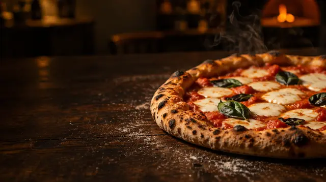
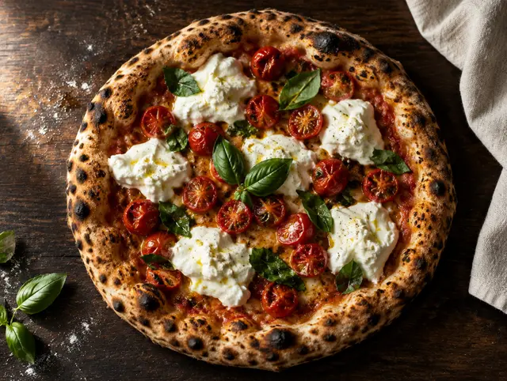
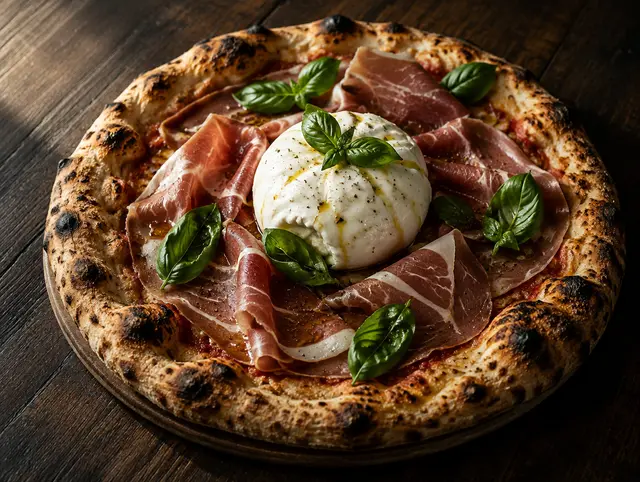
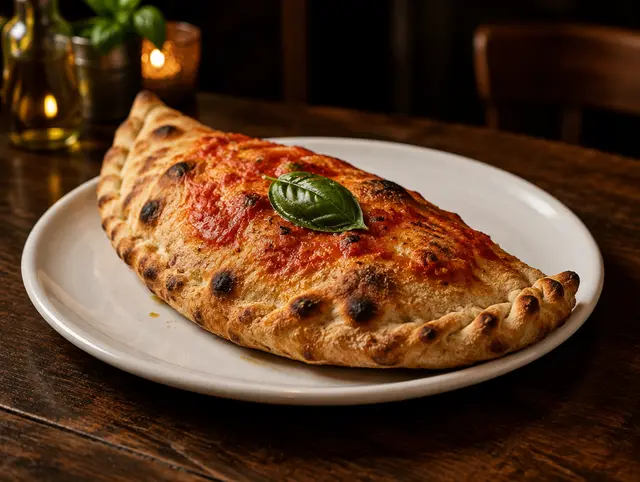
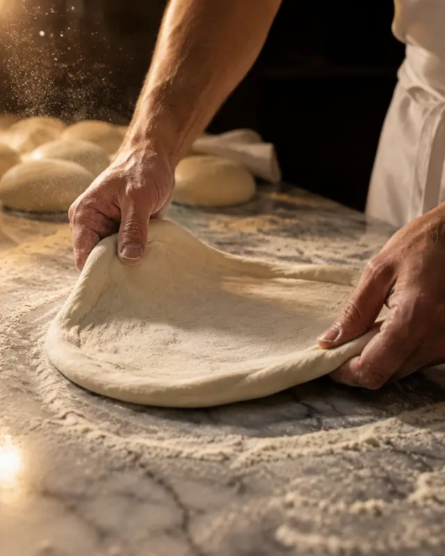
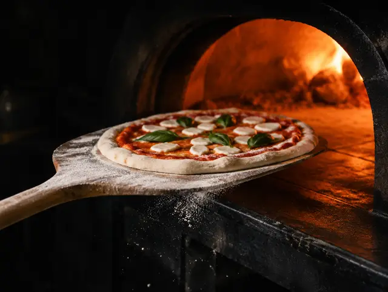
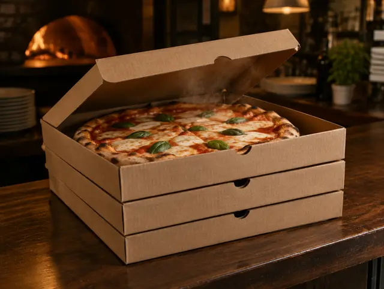
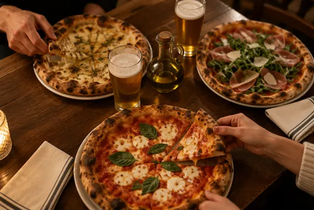

Piazza Duomo · Voghera · dal 1970
La pizza
di Piazza Duomo.
Dal 1970 al Gallo Rosso la protagonista è una sola. Vieni a mangiarla in piazza, o portala a casa ancora calda.
- Dal 1970in centro a Voghera
- Piazza Duomo, 20nel centro storico
- Anche da asportoordini e passi a ritirare
- Tavoli all’apertonella bella stagione
La pizza
Facciamo una cosa sola.
E la facciamo dal 1970.
La pizza è il nostro cavallo di battaglia da sempre. Per questo oggi al Gallo Rosso è l’unica protagonista: tutta l’attenzione va a lei.

Le classiche
Margherita, marinara e le pizze di sempre: quelle che si giudicano al primo morso, perché non hanno niente dietro cui nascondersi.

La Bufala
Mozzarella di bufala e pomodoro. È una delle pizze che i nostri clienti nominano più spesso, e un motivo ci sarà.

Le farcite
Per chi alla pizza chiede qualcosa in più. Quelle del momento te le diciamo al telefono o al tavolo.

Il calzone
Chiuso, gonfio e dorato. Chi lo ordina una volta di solito torna per lui.
Vuoi sapere le pizze di oggi? Il menu completo te lo diciamo al telefono, quando prenoti, oppure al tavolo.
Chiama 338 470 2800

Dal 1970
La storica pizzeria
del centro.
Il Gallo Rosso è nato nel 1970 in Piazza Duomo, e da lì non si è mai mosso: più di cinquant’anni nello stesso posto, nel cuore della città.
Da settembre 2024 abbiamo fatto una scelta semplice: tornare a quello che ci ha fatto conoscere. Solo pizza, fatta con tutta la cura che merita.
- Solo pizzala nostra specialità dal 1970
- In Piazza Duomonel cuore del centro storico
- Al tavolo o da asportocome preferisci tu
- Chiama
Rispondiamo noi, dalla pizzeria. Niente moduli e niente attese: una telefonata e il tavolo è tuo.
- Dicci quanti siete
Giorno, ora e numero di persone. Se c’è un’allergia o un’occasione speciale, diccelo adesso.
- Vieni in Piazza Duomo
Il tavolo ti aspetta. Per l’asporto ti diciamo noi a che ora passare.

Da asporto
Stasera la pizza
la porti a casa.
Chiama, ordina e ti diciamo a che ora è pronta. Passi in Piazza Duomo, la ritiri calda e in pochi minuti sei a tavola.
Orari e dove siamo
Ti aspettiamo
in piazza.
- Lunedì12:00–14:30 · 19:00–23:00
- Martedì12:00–14:30 · 19:00–23:00
- MercoledìChiuso
- Giovedì12:00–14:30 · 19:00–23:00
- Venerdì12:00–14:30 · 19:00–23:00
- Sabato12:00–14:30 · 19:00–23:00
- Domenica12:00–14:30 · 19:00–23:00
Nei giorni festivi gli orari possono cambiare: una telefonata e te lo diciamo subito.

Domande frequenti
Prima di chiamare.
Come si prenota un tavolo al Gallo Rosso?
Con una telefonata al 338 470 2800: ci dici giorno, ora e quante persone siete e il tavolo è prenotato. Nei fine settimana conviene chiamare con un po’ di anticipo.
Qual è il giorno di chiusura?
Il mercoledì. Negli altri giorni siamo aperti a pranzo e a cena: gli orari aggiornati sono in questa pagina.
Fate pizze da asporto?
Sì. Chiama, ordina le pizze e ti diciamo a che ora passare a ritirarle in Piazza Duomo.
Dove si trova la pizzeria?
In Piazza Duomo 20, nel centro storico di Voghera, sulla piazza del Duomo.
Si può mangiare all’aperto?
Nella bella stagione abbiamo i tavoli all’aperto sulla piazza. Se li preferisci, chiedili quando prenoti.
Ho un’allergia o un’intolleranza: come faccio?
Dillo quando prenoti e ripetilo al tavolo: ti indichiamo gli allergeni di ogni pizza e ti consigliamo cosa scegliere.
Posso prenotare per un gruppo o un compleanno?
Certo. Per i gruppi chiamaci qualche giorno prima, così ti prepariamo un tavolo unico.
Hai già fame?
Prenota adesso.
Chiuso il mercoledì · Piazza Duomo, 20, Voghera